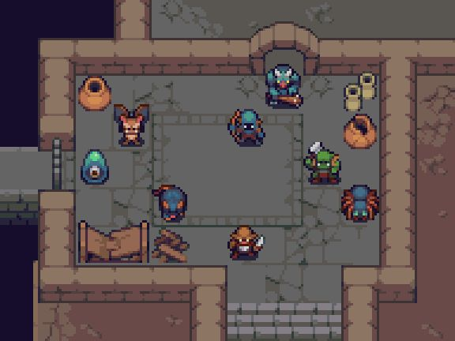

Референсный образец
Референс задаёт крупный пиксель, приглушённую палитру и компактных персонажей. Для новых сцен используем нашу изометрию 4:3.
Файл reference.png открыт в модальном окне в исходном разрешении.
Задача серии: поле в изометрии 4:3, фигуры на отдельных тайлах без подставок. I — персонажи изометрические; F — персонажи фронтальные. Сравниваются ImageGen и PixelLab.

Референс задаёт крупный пиксель, приглушённую палитру и компактных персонажей. Для новых сцен используем нашу изометрию 4:3.
Файл reference.png открыт в модальном окне в исходном разрешении.